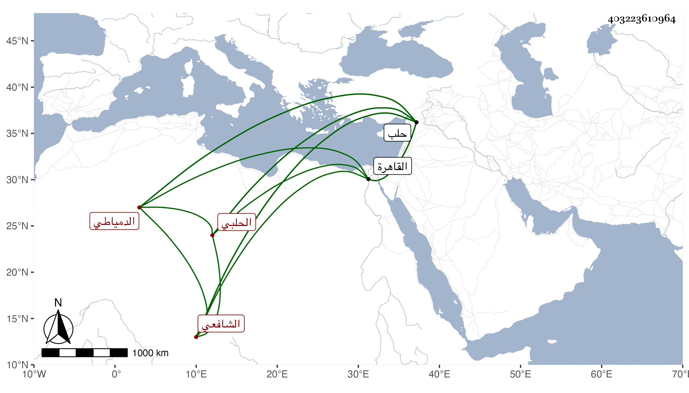

0902Sakhawi.DawLamic.ITO20230111-ara1.EIS1600.403223610964
Biography ID: 403223610964
إبراهيم بن علي بن ناصر برهان الدين الدمياطي الحلبي الشافعي . ولد في أوائل سنة خمس وستين ونشأ بالقاهرة ثم سكن حلب حين قارب البلوغ ولازم بني السفاح والقاضي شرف الدين الأنصاري والكمال بن العديم وسمع الحديث من الشرف الحراني وابن صديق وغيرهما ومن مسموعه على الأول العلم لأبي خيثمة واشتغل على الشمس الغزي وغيره وولي قضاء العسكر بحلب وحدث سمع منه الفضلاء بل كتب عنه شيخنا في فوائد رحلته الأخيرة وكان خيرا دينا عاقلا رئيسا عديم الأذى حتى لعدوه كثير القيام مع الغرباء والعصبية للعلماء ونحوهم ومن الغريب أنه مشى من جبرين إلى حلب على رجل واحدة . مات في يوم الخميس ثالث عشري المحرم سنة سبع وأربعين ودفن يوم الجمعة قبل الصلاة رحمه الله .
